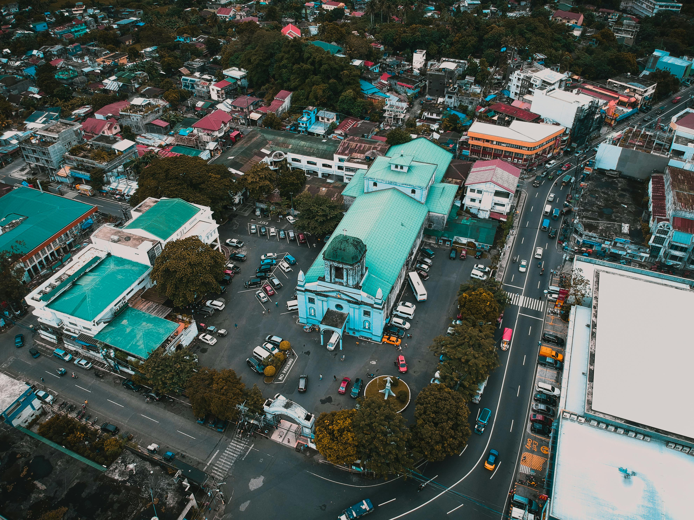
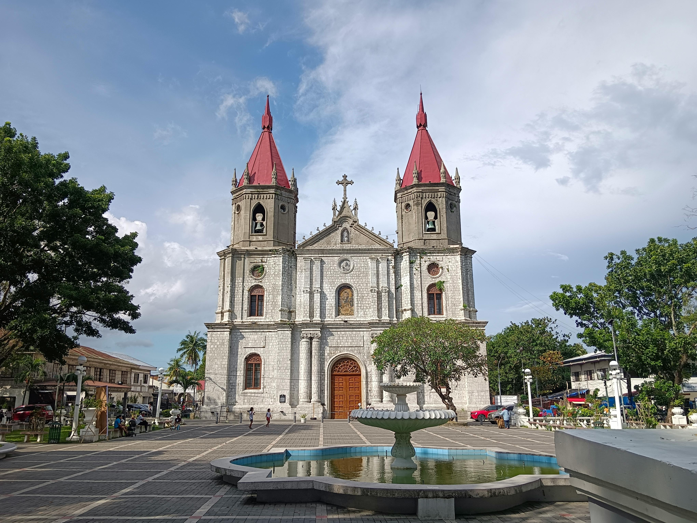
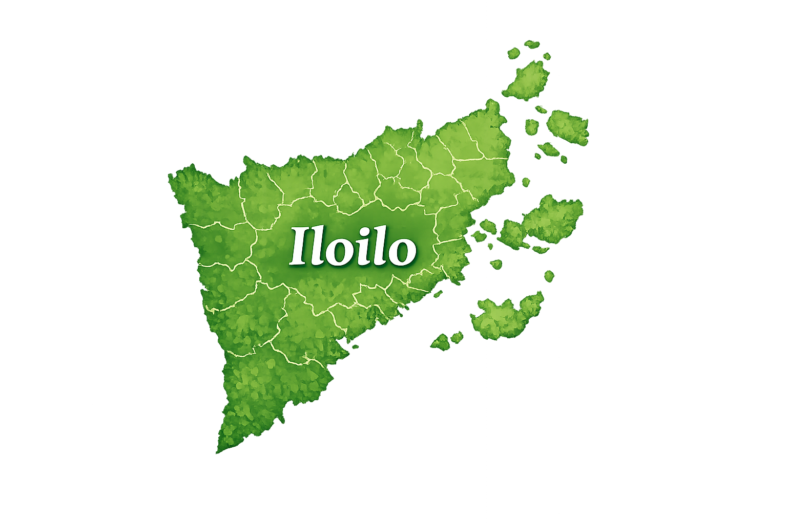

Molo Church
Known as the 'feminist church' — a historic Baroque church once administered by women during the Spanish colonial era.
Start ExploringOverview
Molo Church, also known as St. Anne Parish, is famous for its Gothic-Renaissance architecture and its unique all-female ensemble of saints. It is one of Iloilo City's most iconic heritage churches.
Top Attractions

All-female saints statues

Bell tower
Things To Do
Attend church services
Explore architecture
Take photos
Visit nearby heritage sites

Travel Information
- Best Time: Morning or late afternoon
- Location: Iloilo City
- Nearest Transport: Public transport routes
- Located in Molo district, Iloilo City. Easily accessible by jeepney or taxi.
Travel Tips
Observe silence inside
Dress appropriately
Combine visit with nearby attractions
Suggested Itinerary
Morning
Visit Molo Church and attend mass
Afternoon
Explore nearby heritage houses and attractions
Evening
Enjoy local dining spots in the city
Explore by Category
Islands
Crystal waters, white sands, and island adventures, your perfect tropical escape in Iloilo.
Learn more


Foods
Savor Iloilo's iconic flavors, from hearty soups to grilled favorites and fresh seafood delights.
Learn more


Historical
Walk through Iloilo's past with timeless churches, landmarks, and heritage streets.
Learn more